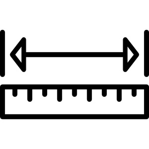

| With preceding preposition:7485 | Crum: 600b | ||||||||
| ⲉ- S | 7486 | ||||||||
| ⲛ- | 7487 | ||||||||
| ⲛⲁ- | 7488 | ||||||||
| ϣⲁ- | 7489 | ||||||||
| view | ⲟⲩⲱϣ SAB ⲃⲱϣ B | (noun male) cleft, gap [οπη, τρυμαλια, χασμα]
space, distance [διαστημα] interval, pause, holiday1756 |
| view | ϣⲓ SLBF ϣⲉⲓ S ⳉ(ⲉ)ⲓ A ϣⲓ- SBF ⳉⲓ- A ϣⲓⲧ⸗ SB ϩⲓⲧ⸗ Sa ⳉⲓⲧ⸗ A ϣⲏⲩ† S ϣⲏⲟⲩ† B | (verb) intr: (rare), measure, weigh [διαμετρειν]
qual: [εμμετρος] tr: [μετρειν, διαμετρειν]130 |
| view | ϣⲁⲩ SB ϣⲁⲟⲩ S ϣⲟⲟⲩ Sf ϣⲉⲩ ALF ϣⲟⲩ- SABF | (noun male) use, value [χρησις, επιτηδεια]
as adj ― useful, fitting ― virtuous292 |
| view | ϣⲁⲩ SB ϣⲉⲩ A plural: ϣⲏⲩ S | (noun male) trunk, stump, piece [κωλον, στελεχος, δαλος]2000 |
| view | ϣⲁⲩ B | (noun male) male cat3205 |